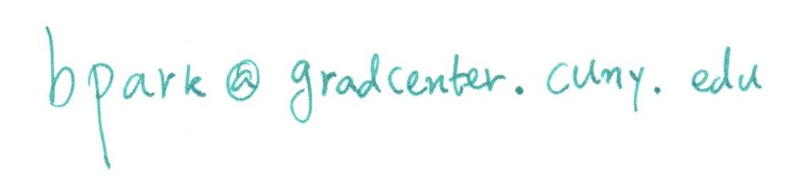

Calculus with Analytic Geometry 2
MATH 155 Section 06 [1947], Spring 2017
Tuesdays and Fridays 09:00-- 11:00, Room: HW511
CUNY Hunter College
Instructor: Dr. Byung Do Park Email: 
Office Hours: Tuesdays 11:30--12:30 at HE924 or by appointment.
Course Syllabus: PDF
Section Syllabus: PDF
Announcements
2017-05-28: Letter grades have been submitted. Have a wonderful summer!
2017-05-15: FINAL EXAM SCHEDULE CHANGE: Due to administrative reasons, our final exam has to take place on Monday 22nd May 2017, 09:00--11:00 at HW511.
2017-05-05: MyMathLab Homework for Sections 10.1, 10.2, 10.3, 10.4, 11.1, 11.2, 11.3 has been posted.
2017-04-28: Final Exam Announcement has been posted below in Exam Schedules section.
2017-04-28: MyMathLab Homework for Sections 9.6 has been posted.
2017-04-05: MyMathLab Homework for Sections 9.4, 9.5 has been posted.
2017-04-05: Solutions to the Exam II have been posted below.
2017-03-24: Please find the updated review sheet for Exam II below.
2017-03-24: MyMathLab Homework for Sections 8.8, 9.1, 9.2, 9.3 has been posted.
2017-03-19: The Exam II will be given on Tuesday, April 4th, in class. Details are below.
2017-03-17: To make-up the snow day cancellation (March 14th), we will meet 10 minutes earlier each time, from Tuesday March 21st until the make-up is done.
2017-03-17: MyMathLab Homework for Sections 8.5, 8.6, 8.7 has been posted. Sections 8.6 and 8.7 are optional.
2017-03-14: Hunter College will be closed on Tuesday Mar. 14th due to snow storm. Obviously we do not meet today.
2017-03-10: MyMathLab Homework for Sections 8.4 has been posted. Suggested due date Mar. 24th.
2017-03-08: Solutions to the Exam I have been posted below. There is no pass/fail policy on Exam I. If you think your result does not meet your satisfaction, study hard for next exam.
2017-03-03: MyMathLab Homework for Sections 8.3 has been posted. Suggested due date Mar. 17th.
2017-02-26: Please see an advertisement on CUNY GC MathFest below.
2017-02-24: During the week of Feb. 27th, my office hour originally scheduled on Feb. 28th will be held on Friday, March 3rd 11:30--12:30 at HE924.
2017-02-24: The Exam I will be given on Tuesday, March 7th, in class. Details are below.
2017-02-24: MyMathLab Homework for Sections 7.5, 7.6, 8.1, 8.2 has been posted. Suggested due date Mar. 7th.
2017-02-17: MyMathLab Homework for Sections 7.1, 7.2 has been posted. Suggested due date Mar. 3rd.
2017-02-10: MyMathLab Homework for Sections 6.5, 6.6, 6.7 has been posted. Suggested due date Feb. 24th.
2017-02-03: MyMathLab Homework for Section 6.3 has been posted. MyMathLab Orientation, Prerequisite Review (Precalc. and Calc. I), and Section 6.4 Homework are optional. Please feel free to explore them but your score for these assignments won't be reflected to your MyMathLab score for this course.
2017-01-31: Here is a PDF of Math155 Entrance Exam.
2017-01-30: Welcome!
MyMathLab
Each student should create an ID for MyMathLab and registered for the course with a particular course ID. The course ID is park23715. Here is a handout describing the registration procedure.
MyMathLab Homework #1 Section 6.3 (11 problems). Suggested due date: February 17th.
MyMathLab Homework #2 Sections 6.5 (7 problems), 6.6 (6 problems), and 6.7 (6 problems). Suggested due date: February 24th.
MyMathLab Homework #3 Sections 7.1 (13 problems) and 7.2 (13 problems). Suggested due date: March 3rd.
MyMathLab Homework #4 Sections 7.5 (14 problems), 7.6 (10 problems), 8.1 (12 problems), and 8.2 (11 problems). Suggested due date: March 7th.
MyMathLab Homework #5 Section 8.3 (11 problems). Suggested due date: March 17th.
MyMathLab Homework #6 Section 8.4 (9 problems). Suggested due date: March 24th.
MyMathLab Homework #7 Section 8.5 (12 problems). Suggested due date: March 31st.
MyMathLab Homework #8 Sections 8.8 (12 problems), 9.1 (16 problems), 9.2 (11 problems), and 9.3 (15 problems). Suggested due date: April 4th.
MyMathLab Homework #9 Sections 9.4 (16 problems), and 9.5 (19 problems). Suggested due date: April 25th.
MyMathLab Homework #10 Section 9.6 (12 problems). Suggested due date: May 12th.
MyMathLab Homework #11 Sections 10.1 (15 problems), 10.2 (17 problems), 10.3 (15 problems), 10.4 (19 problems), 11.1 (22 problems), 11.2 (18 problems), 11.3 (12 problems). Suggested due date: May 19th.
Exam Schedules
Exam I: March 7th (Tuesday), In-class.
- Sections 6.3, 6.5, 6.6, 6.7 (Example 2 --- compressing a spring only), 7.1, 7.2, 7.5, 7.6, 8.1, 8.2 will be covered.
- Total 10 questions. One question from each section.
- Problems will be mostly taken from the exercises at the end of each of section, and they will be similar to the ones in the review sheet.
- If you master all problems in the review sheet, that will be optimal preparation for this exam. If you have time, go over examples we discussed in class and try yourself a couple of similar calculations using those sets of exercises -- that will work toward perfect score in this exam.
- Here is a set of Review Problems for Exam I (A hardcopy of this PDF will be given).
- More resources for review: Old Exam I, Solutions to Old Exam I.
Here is the Problems and Solutions.
The average was 51.59 and the maximum score achieved by a student was 94.
Exam II: Date: April 4th (Tuesday), In-class.
- Sections 8.2, 8.3, 8.4, 8.5, 8.8, 9.1, 9.2, 9.3 will be covered.
- Total 10 questions. Two questions from Sec. 8.4, 8.8. One question from each of remaining sections.
- Problems will be mostly taken from the exercises at the end of each of section, and they will be similar to the ones in the review sheet.
- If you master all problems in the review sheet, that will be optimal preparation for this exam. If you have time, go over examples we discussed in class and try yourself a couple of similar calculations using those sets of exercises -- that will work toward perfect score in this exam.
- Here is a set of Review Problems for Exam II.
- More resources for review: Old Exam II, Solutions to Old Exam II.
Here is the Problems and Solutions.
The average was 58.20 and the maximum score achieved by a student was 99.
Exam III (Final Exam): May 22nd (Monday), 09:00--11:00 at HW511. --Note change of date and time
Note that May 19th is CUNY reading day and we will meet regardless.
- The entire course material on the syllabus will be covered (except those I excluded in previous exams).
- Here is a set of Review Problems for Final Exam.
- More resources for review: Old Final Exam, Solutions to Old Final Exam.
Here is the Problems and Solutions.
The average was 55.31 and the maximum score achieved by a student was 96.
Advertisements
There is a CUNY Math contest open for all matriculated CUNY undergraduate students. If you are interested in problem solving, please see this page.
On Friday the 10th of March, there will be a math event at the CUNY Graduate Center. Normally there are free lunch and foods as well as travel reimbursement. Here is a PDF for more information.
Tutoring information
If you need an assistance from departmental tutoring, please visit the Dolciani Mathematics Learning Center.
Here is a handout for Math155 students. Please take a look. It has useful information about tutoring hours and review sessions.
Links
Webpage of Byungdo Park
Hunter College Math Department Homepage